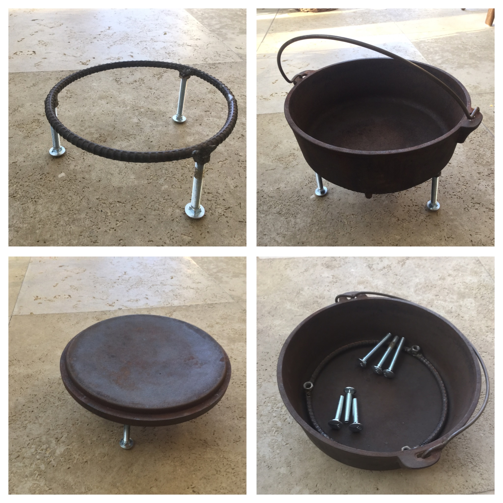
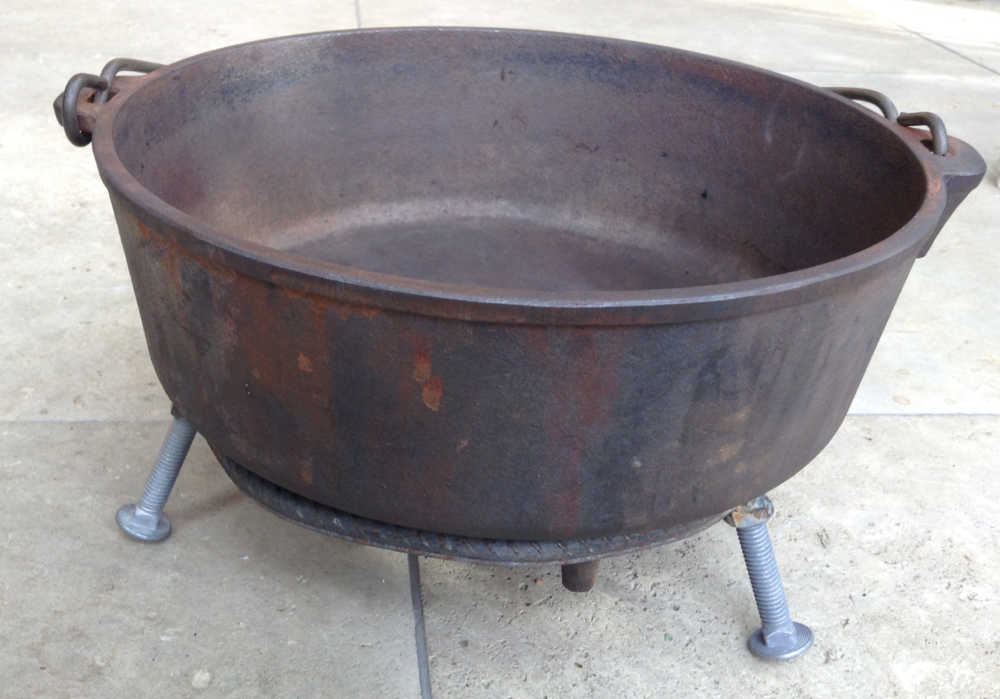

 
The trivet is composed of 3/8" steel rebar bent to fit around the legs of a 10" dutch oven. The ends are welded together. The legs are 3/8" carriage bolts attached to 3/8" nuts welded to the bottom of the rebar circle. Instructions
The bolts may be disassembled to allow stowing the trivet in the dutch oven. Different lengths of bolts provide adjustment in height.
This trivet can be used to elevate the lid above coals for cooking. It may also be used with a 12" dutch oven.